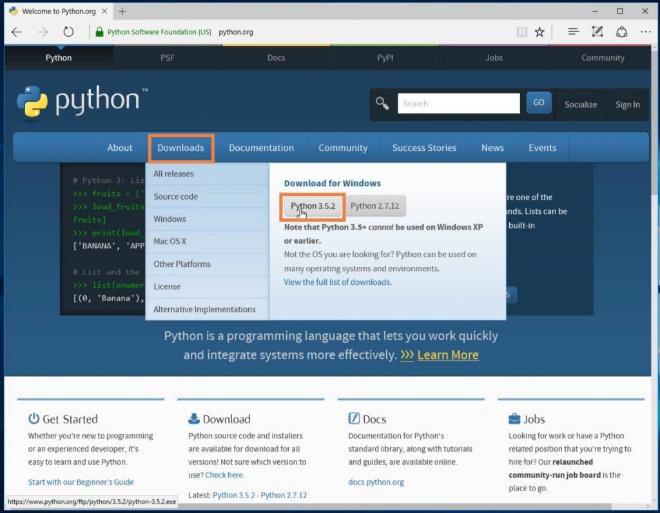
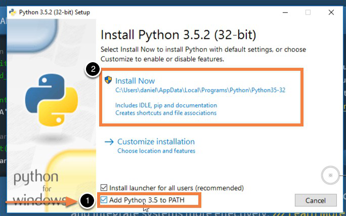
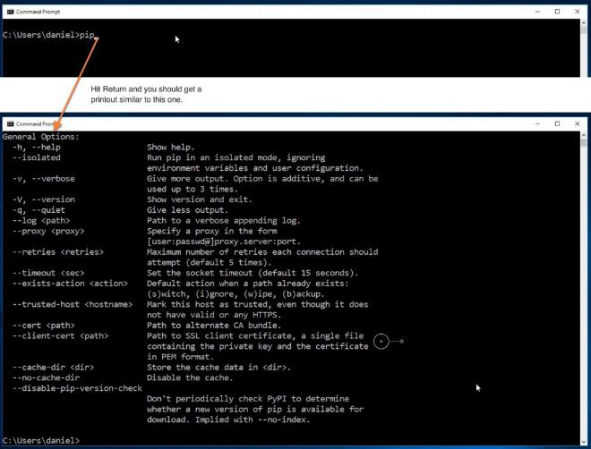

Установка Python и pip на Windows
автор
3-4 минуты
В данном разделе мы научимся устанавливать Python и менеджер пакетов pip на Windows 10 с нуля. Лучший способ установить Python на Windows — это скачать официальный установщик с сайта python.org. Чтобы сделать это, откройте браузер и перейдите по ссылке https://python.org/. После завершения загрузки установщика, откройте «Загрузки». Сайт обнаружит, что вы посетили его с Windows, и предложит скачать последнюю версию Python 3 или Python 2. Если вы не знаете, какую версию использовать, то я рекомендую Python 3. Если вам нужно работать с унаследованным кодом Python 2, тогда вам необходим Python 2. Под вкладками Downloads → Download for Windows нажмите кнопку “Python 3.X.X” (или “Python 2.X.X”), чтобы скачать установочный файл.

64-разрядный Python против 32-разрядного
Если вы гадаете, какую версию Python нужно использовать 64-разрядную или 32-разрядную, вам, скорее всего, понадобится 32-разрядная. Иногда достаточно тяжело найти бинарники для 64-разрядной версии, а это значит, что некоторые сторонние модули могут установиться неправильно на 64-разрядной версии Python. Мое мнение – использовать ту версию, которую конкретно рекомендуют на официальном сайте. Если вы кликните кнопку Python 3 или Python 2 под “Download for Windows”, вы получите именно ту версию, которую выбрали. Помните, Если вы в итоге сделаете неправильный выбор, и захотите перейти на другую версию Python, вы можете просто удалить существующую версию и переустановить его, скачав другой установщик с официального сайта.
Запускаем установщик Python
По окончанию загрузки установщика, запустите его двойным щелчком мыши, чтобы начать установку Python. Обязательно установите флажок на «Add Python X.Y to PATH» в мастере настройке. Убедитесь, что флажок “Add Python X.Y to PATH” поставлен в установщике, в противном случае у вас будут проблемы с доступом инсталлятора Python к командной стоке. Нажмите «Установить» для начала установки. Установка должна пройти быстро, после чего Python будет готов к запуску на вашей системе. К следующему шагу нужно убедиться, что все было выполнено надлежащим образом.

Подтверждаем, что Python был установлен правильно
По окончанию установки, Python должен быть установлен на вашем компьютере. Давайте убедимся в том, что все было выполнено правильно, протестировав, имеет ли Python доступ к командной строке (cmd) Windows:

Что теперь?
Убедившись в том, что все сделано правильно, и убедившись в правильной работе Pip в вашей командной строке, вы можете смело заявить, что установили Python на вашей системе.